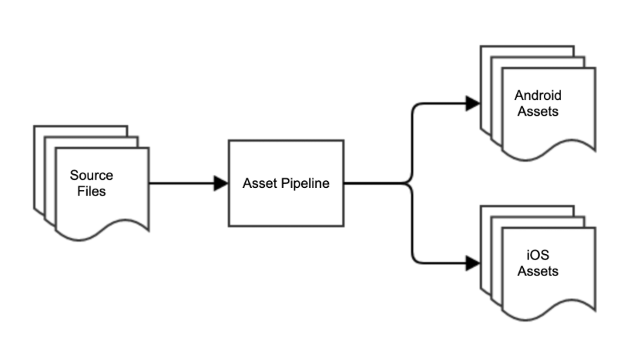
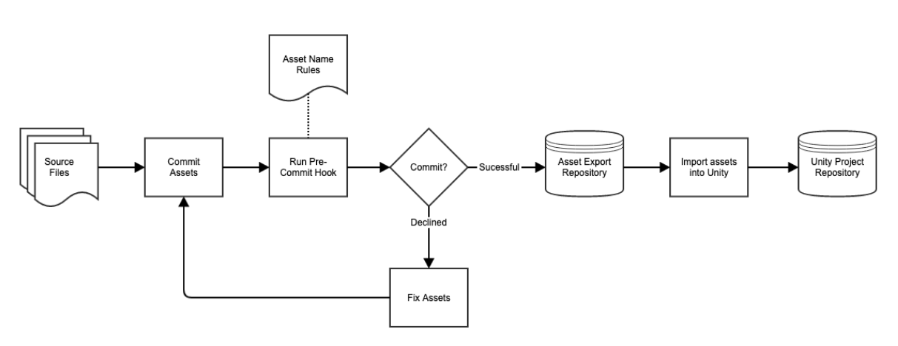
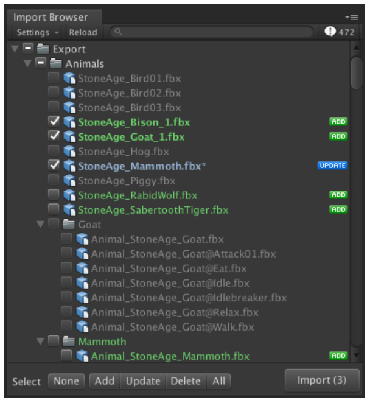
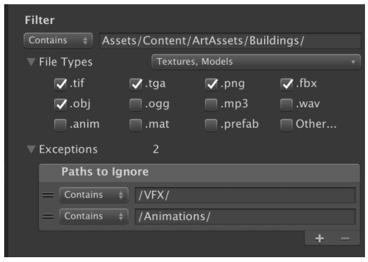
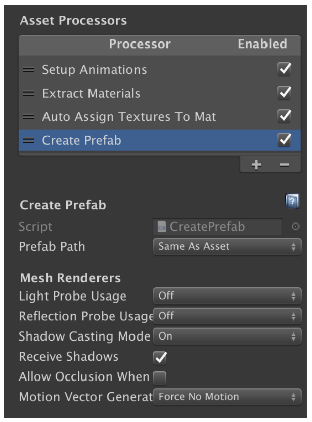

0x00 问题
- Preset不支持个性化控制一个asset的属性，怎么办？（升级新版本，新版本提供了）
- 资产导入配置的管理问题？
0x01 原文
Building a Custom Asset Pipeline for a Unity Project 原文地址
0x02 一些定义、约定和目的
asset pipeline：在管线的一端提供源文件（格式正确的），经过管线可以得到优化后的、可以直接用在游戏中的资产。

这里面一般会涉及到：文件格式的转换，使用对应平台更适合的压缩方式，组装成游戏中的预制对象等等。
目的是通过asset pipeline可以保证资产在游戏中可用，对于资产驱动的游戏来说尤为重要，节省处理资源消耗的人力（美术和开发都不觉得这项工作应该要自己来做）。
0x03 目标
- Automation:
asset pipeline需要尽量少的手动操作（有可能自动化尽量自动化）
- Batch-Processing:
批量化的处理资产可以允许快速调整资产的导入设置，比如调整下载包的包体大小
- Validation:
提早对asset pipeline的输入做格式、正确性检查
- Maintainability and Extendability:
易于管理、维护和扩展，需要让美术和开发都能对asset pipeline理解和进行调整。
0x04 流程
- ddc软件中，对资产做preprocess（dcc插件、python脚本）
- pre-commit hook 资源命名检查
0x05 资产名检查
检查内容：
- 文件名包含非法字符
- 文件名不匹配预定义的命名模式
- 大小写
- 扩展名
- 前后缀
- 文件类型
- 白名单
时机：

通过pre-commit hook来检查资源名的合法性，对于不合法的提交返回报错信息。保证工程中资产的正确性，和意外的错误提交。
0x06 Unity相关编辑器及资产处理API
Extending the Unity Editor
Unity’s Asset Database
提供了API对资产进行导入，创建，删除，修改。
可以通过代码提供从工程外将资产文件复制导入工程的功能。
0x07 导入浏览工具（Import Browser）
版本控制难题，通过拆分subtrees，submodules来管理会有很多麻烦（没用过，目前不清楚，git的lfs如何？）
实际开发过程中，未必需要导入全部资产再进行工作。
需要对导入资产提供选项，只导入必须的部分（这是否需要对一些逻辑相关的资产做出限定？对于资产和代码关联密切的如何处理，比如UI）。
因此Import Browser可以理解为一个diff工具（custom editor tool），查看当前资产仓库和工程中资产的差异。

保持资产仓库和工程内资产路径的一致性，自动创建缺失目录，文件可读性（通过宏定义开启可读性检查的代码的方式）等问题。
可以选择性开启此步手动操作是否必要，不必要完全可以自动全量导入到工程内。
0x08 自定义资源管线
在Unity Editor的Assets目录中编辑资产文件，会触发Unity的资产导入，是一个自动但可以自定义扩展的过程。
AssetPostprocessor
主要功能就是在Unity的导入管线执行自定义的钩子函数（hook into the import pipeline and run scripts prior or after improting assets）。
- OnPreprocessXXX
- OnPostprocessXXX
Preset
将Inspector中的设置保存成序列化文件（yaml），可以手动或通过代码设置到相同类型的对象上，不限于资产对象，预制体，组件，工程设置等。
实践！结合起来
Unity-Technologies/ToolsCollection
工程地址：待完成
0x09 Asset Import Rules
使用基于规则（rule）的方法实现资产管线（模仿工具合集中的preset importer）：如果一个导入的资产文件路径匹配预定义的规则过滤器的配置，那么这个规则的import settings就会应用到这个资产上。
手动处理部分：定义规则配置，维护规则。
出于这个原因，需要开发一个易于使用的图形用户界面：理想情况下，美术和开发都能够阅读、理解和更新规则的配置。
1. Rules
1) Rule Asset
导入规则的实际载体，保存和配置定义的导入规则。每一个导入规则都时自定义的ScriptableObject专用资产文件，每个资产文件包含三个子资产，每一个对应一类资产的preset文件。
每个规则保存在一个文件中，方便版本控制。
为了使修改规则资产尽可能容易，需要编写一个复杂的自定义检查器（检查什么？）
2) Filter Options
资产筛选选项，来决定哪些资产需要应用规则。

筛选器来判断导入的资产路径是否符合条件：
- 字符串模式
- 文件名包含“_Normal”
- 路径以“Assets/Sprites/UI”开始
- 扩展名必须匹配白名单中的格式
- .png
- 必须为模型或音频类型（可以避免检测扩展名字符串模式）
- 配置例外的路径、资产
通过自定义的asset postprocessor来触发工程中的导入规则，抢占规则简单应用第一条满足的筛选器，或后续的匹配项直接进行覆盖。
2. Importer Presets
每一个规则包含了三个importer preset：
- Texture
- Model
- Audio
规则资产的inspector中会显示需要修改的资产类型对应的导入设置。
当资产匹配了一个规则以后，会在导入后应用对应类型的preset，这只会覆盖preset中设置需要进行覆盖的设置（对于设置中不能disable的属性，需要在应用后重新赋原值）。
需要验证：只有当有目标资产要修改时，importer的Inspecotr才能被编辑。如果只使用preset，就没有这样一个asset。这样的话，preset在inspector中显示的属性可能就不包含我们需要编辑的属性。（没有看到对应的情况很难理解这种说法。）
另外平台相关的不能修改（2019.2）。
文中是通过添加Asset Processors步骤来解决上面这些问题的，为什么？
3. Asset Processors
有时候资产管线做的事情并非只是应用preset设置属性，可能需要对资产管线的扩展性和自定义提出要求。
Asset Processors在功能上与Unity的AssetPostprocessor类似，同时也hook了他提供的资产导入事件，以便我们开发自定义功能。

区别：
- 与特定规则绑定，只对匹配特定规则的资产有效
- 基于ScriptableObject，方便对不同设置重用，在Inspector中显示序列化的属性
创建一个新的Asset Processor，继承AssetProcessor基类，重写hook事件方法，最后添加到一个Import Rule的配置中。
每一个import rule的Inspector中保存一个列表来显示匹配的资产要执行的asset processors，可以通过反射找到所有继承了AssetProcessor基类的派生类，在添加到import rule（规则资产）时创建一个实例，并作为子对象添加到import rule上。
对Inspector中的Asset Processors列表是顺序相关的，总是从上向下逐个运行，关系一个AssetProcessor可能需要依赖另一个AssetProcessor的结果，这样被依赖的就需要先执行（可以自动吗？类似组件的Dependence标记）。
这样就形成了Import Rule配合不同Asset Processor组成的工具链，以组件化的方式，灵活且强力。对于开发来说，根据需求提前定义好一系列Asset Processor就可以快速地调整、应用、配置他们，而不需要修改代码。
4. Rules Browser Window
统一浏览全部分开保存的import rule资产内容，可以查看工程中所有导入规则，或增加、修改、删除规则。
0x0a 展望
编辑器相关限制，preset版本可能导致一些问题。
如何管理自动生成的资产，如果资产被移动或者删除，自动创建的prefab不会被清理干净，留下了废弃的预制件。是否可以通过跟踪导入依赖关系管理自动生成的资产，减少资产的重复和手动清理。
预制体组成时依赖复数规则的资产，如何处理这种多规则的情况。